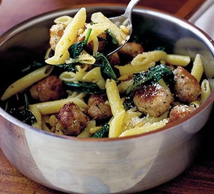

Penne paster meatballs

Image of the Penne paster meatballs
Meatballs are always a surefire winner for family meals - made with sausages in this recipe for something different
Ingredients
- 200g penne pasta
- 3 fat sausages
- 1 tbsp olive oil
- 250g bag spinach
- 50g parmesan
Steps for cooking
- Cook the pasta according to pack instructions. Meanwhile, squeeze the sausages from their skins, then roughly break the meat into 12 pieces. Roll into balls.
- Heat the oil in a large frying pan, add the sausage balls, then cook over a medium heat until golden, about 5 mins. Pile the spinach on top of the sausage balls and cook, stirring frequently, for 2-3 mins until completely wilted. Season with a little salt and plenty of ground black pepper, then toss in the toasted pine nuts.
- Add the drained pasta to the sausages and spinach, then toss well, adding half the parmesan. Serve spooned into individual serving bowls with the rest of the parmesan scattered on top.